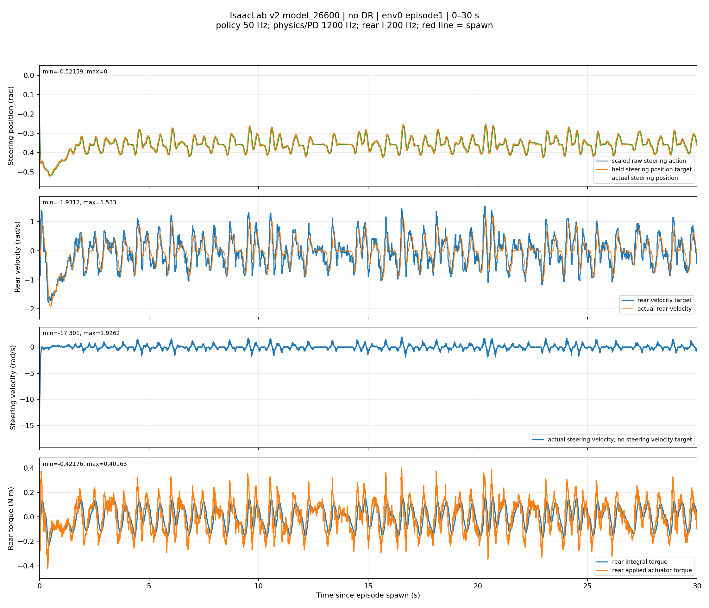
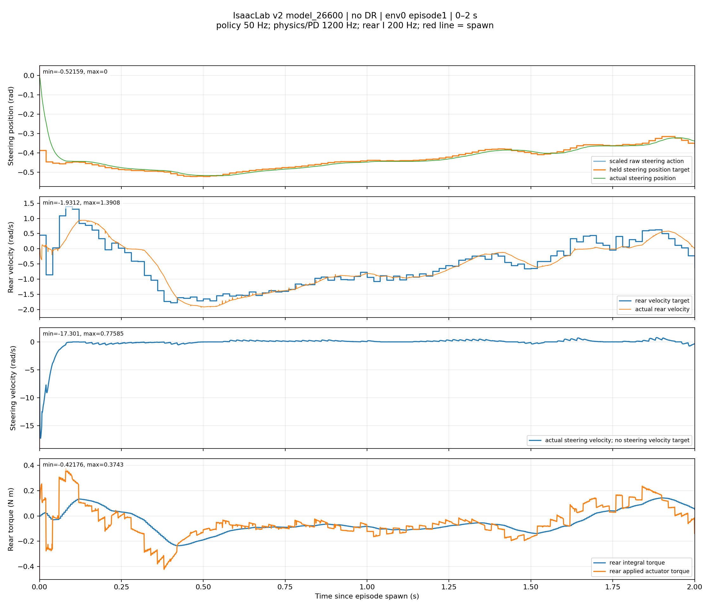
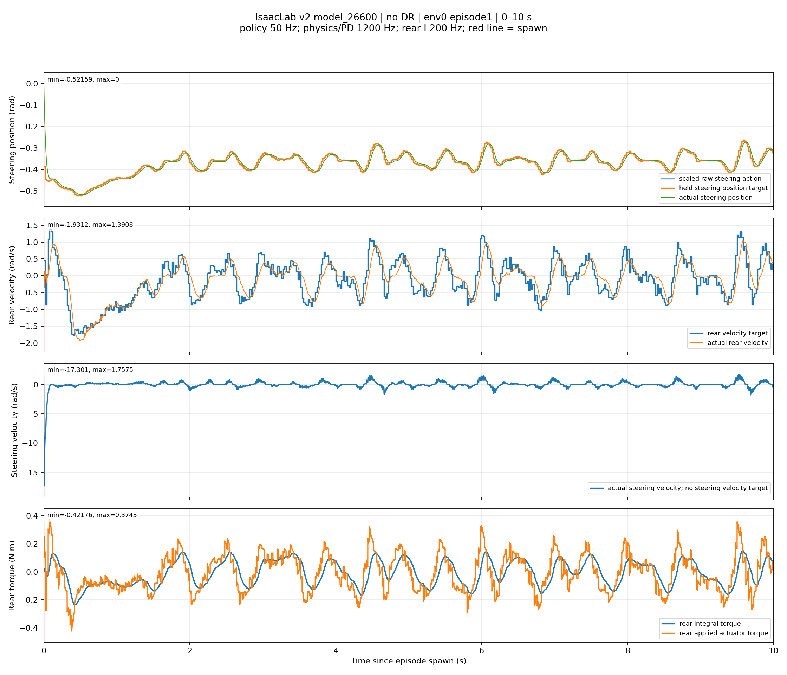
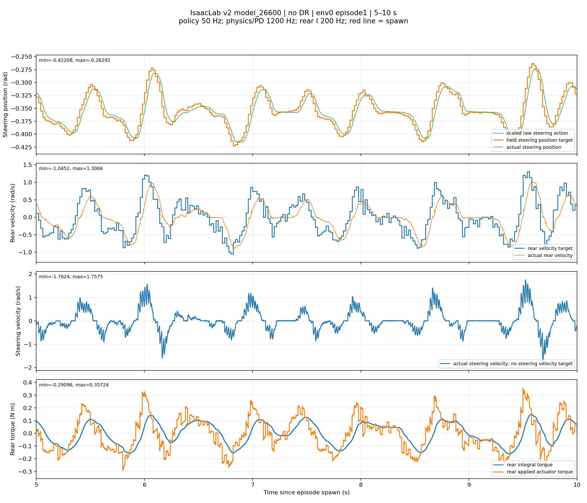

Seed 42; env 0, episode 1. All 64 environments reached 30 seconds. Policy/targets 50 Hz, physics/PD 1200 Hz, rear integral 200 Hz.
Commands are steering position + rear velocity. Steering velocity is measured response, not a policy target. Replay the continuous 0–10 s prefix to retain startup and controller history.
Report and reproduction command · Held commands (CSV) · Actual states (CSV) · Reference metadata · Verification




Red lines mark spawn. These are simulation records; hardware response has not been measured by this capture.